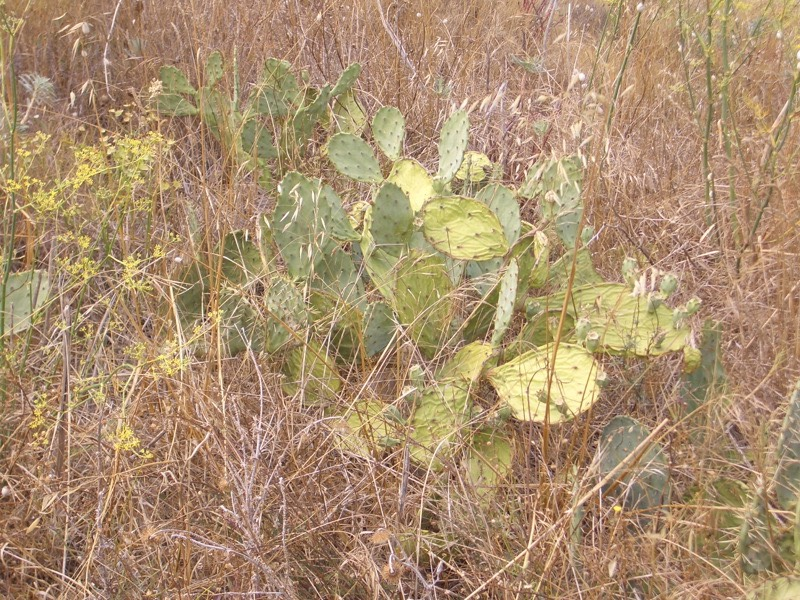
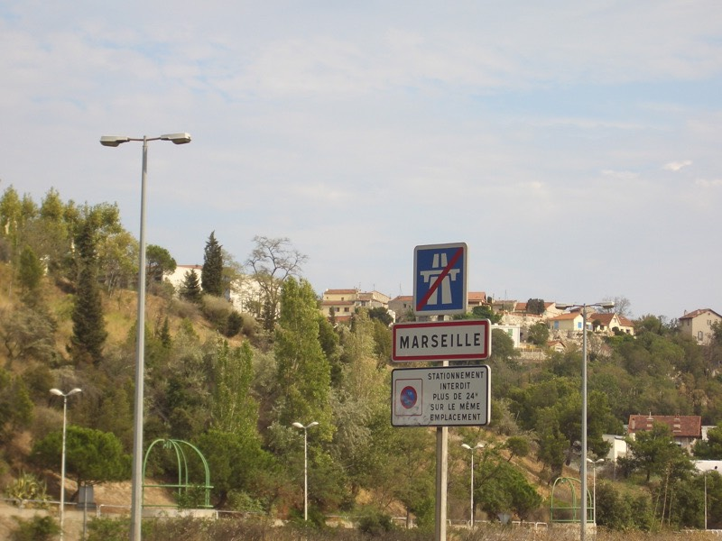

早上起床，鼻塞的很嚴重，到達沒辦法用鼻子呼吸的程度，努力的擤了鼻涕，也沒什麼幫助。
依照旅館給的地圖，這裡的確是一個一條路進出的地方。
往外面唯一的一條路，要過河才能到，地圖上是用白色的虛線做記號。
看不是很懂，應該不是橋，猜想可能是海底隧道之類的吧？
答案揭曉，是渡輪呀！超炫的 :D 真好玩，沒想到居然是要搭船過河。
問了問價錢，人跟腳踏車是免費的，真好，又省下了交通費。
但是如果開車或是騎機車搭船過河的話，要酌收3~4.5歐元的費用。
河的兩岸個有一艘船，20分鐘會發一班船（也就是一小時三班船來回）。
船開動的時候相當的平穩，引擎依舊沈穩的轉動，根本不像是開動的樣子。
兩船相會，行駛到對岸只要兩分鐘的時間。
若是沒有渡船的服務，就要騎車回頭，再設法另外一條能通往馬賽的路，忙一整天的結果，可能也是只能到這裡而已。
過船到對面的城市，聖路易港口，入鎮的第一家麵包店買了早餐，鹹的派餅，裡面有番茄醬、洋蔥、火腿等東西。
還有可口的法國麵包，對切一半方便攜帶，吃這個才會有飽足感，只花了1.8+0.65歐元，便宜又好吃的早餐。
渡過了河，繼續跟高速公路奮戰，地圖上標示能到的路，全都是禁行腳踏車的，有標跟沒標一樣。
設法將自己接上N568公路，有幾段變成禁行腳踏車，不管它硬著頭皮偷騎，不然實在沒有移動的空間。
路上發現的風力發電機，一整排唷∼但轉的無精打采的。
昨天打算買背包裝部份的行李自己背，避免新買的貨架隨時都有再度斷裂的危機。
睡醒之後覺得真是愚蠢的決定，買背包一來要花錢，二來只是增加行李的重量罷了。
真的這麼想自己背的話，就把馬鞍背包的上層拆下來背不就好了？
只是背包設計的不是很好，背起來有點不舒服，再加上肩膀跟背後已經晒傷，摩擦之下更是痛呀 @@"
想到我當兵的時候，有一次跟菜我很多的學弟兩個人去出公差，拿著鐵鎚將旗座敲到土裡面固定住。
由於鐵鎚只有一隻，理所當然是他負責敲，我在旁邊監工納涼。
『那就交給你了，累得話就說一聲，可以換手。』
十五分鐘過後....
『學長，手有點酸，可以換手嗎？』（真是個沒觀念的學弟。）
『可以呀，換手有什麼問題，那你就右手換左手，繼續敲吧。』
『.........』
『懷疑呀！？』
背著相當沈重的包包也一樣，右肩背的痛到不行時，就換左肩背，背了一整天，稍微能體會貨架跟FCR1的辛苦。
真的很重，已經痛到不會痛的屁股，也因為背著重物騎車的緣故，居然又重新痛了起來，意想不到呀。
騎了三十公里之後發現距離馬賽還有53公里的路標，這樣大概騎八十公里就能到了。
無奈這是開車的距離，騎腳踏車根本沒這個福份，之後騎了60公里時，又看到距離馬賽35公里的牌子，變成要95公里才能到。
亂七八糟隨便繞，本來就迷路的很淒慘，一進入城市之後只有每況愈下。
下午一點到一個M城，找到了網路可以用，稍作休息，往南先走D5->D49A->D9->D48A->N568。
這一路居然都在爬山，真是出乎意料，還以為到了海邊，路會平順許多，結果完全不是這麼一回事。
M鎮有很多的船，過其中的一條橋時，發現橋面有些微不尋常的震動，橋剛過完，還沒來得及出去，就被柵欄給擋住了。
往後看，橋居然升起來了，原來有帆船要通過，一走就是十幾艘船，等了好久柵欄才重新放下來。
半路經過一家看起來感覺很好的雜貨店兼蔬果攤。
買了大瓶的可樂（1.5歐元），法國物價很奇怪，不單單是貴而已，
一樣的東西價錢差異相當大，好幾次發現買貴了，都搥胸頓足。
再買一包雞蛋糕（1.95歐元）當午餐填肚子，相當的好吃！應該多買一包當點心的。
本來是有點想買西瓜來吃，但是不是很方便攜帶，一口氣吃完一整顆，大概也動彈不得了。
走了好多莫名其妙的小路，繞的頭昏腦脹，幸好逐漸的往馬賽的方向移動中。
仙人掌？？是不是有這麼熱？

經過一條隧道後，看到很美很美的橋樑，在海的彼岸那座巨大的城市，想必就是馬賽了。
沿著海岸線移動，下午五點剛過，馬賽，我到了 XD。
開車的人真好，一直開到高速公路的終點就是馬賽，無比羨慕。

馬賽的海邊很美，有幾段海邊比較偏工業區，熱鬧的地方，有好多好多的船跟遊客。
沒有看到數量龐大的黑人跟阿拉伯人，可能是沒往市區走的緣故吧。
塞車塞的亂七八糟，這邊有點讓我連想到板橋的某段路，瞬間回到台灣的錯覺。
到處都有一些碉堡類的東西
海邊有許多的小販，畫畫的就好多家，有些以我的眼光看來，真的不怎麼樣說 = =" 這樣真的賣的到錢嗎？
很古典的木頭船，想不到還能出海呢？
到處都有的觀光小火車，來賽跑一下吧∼
從馬賽可以搭各式各樣的渡輪到許多的島上去玩∼
雖然很稀少，但還是有一點點海灘∼
目前是地圖無用的狀態，所在地的路都是地圖上所找不到的，乾脆就沿著海岸線走。
天真的想法是，沿著海走，就不會迷路，可能會繞一點路，但應該可以到土倫吧？
快七點，夕陽西下桌布系列
（喜歡就點回去吧）
馬賽公園？底下有擁吻的情侶
馬賽製造，艾迪達。
真的是太天真了∼這個世界不是靠夢幻所構成的。
沿著海走的風景真是一等一的美麗，雖然騎著騎著變成爬山，方向也不是往東還是往西南走。
但這一切我都不以為意，沿著海岸線走，一定不會錯了。
（迷路也可以拍到美麗照片的夕陽西下系列趴兔）
大錯特錯，海岸線也是有盡頭的，是個公子哥攜美眉渡假的小地方，沒有旅館，同時也沒有路可以再往下走了。
回頭走，沒有一個地名是在地圖上有看過的，只好往東邊的方向移動，這樣起碼不會差的太遠。
後來總算看到一個在到土倫之前會經過的地方，CASSIS。
感覺不是很遠，大概15∼20公里吧，從晚上七點開始騎過去，八點左右應該可以到。
又是另一個錯誤的開始，雖然所在地是蔚藍海岸，但想不到我居然爬了一整天的山。
從馬賽往卡西斯的路上，全都是高聳的山地，現在到底是上山還是下海？ ~"~
爬了不算矮的山，在這種鳥不生蛋的地方，出現一家旅館，想說住這種怪怪的地方也不錯，結果掛出客滿的牌子。
這種怪地方的旅館都會客滿.......有點令人擔心卡西斯的狀況。
有本事爬多高，就有相同的福利可以滑多遠的下坡，到卡西斯時是晚上八點剛過，好開心呀！目的地到了。
結果每間旅館都掛出了客滿的牌子，有點不太相信這種偏僻的地方怎麼會客滿呢？
等到了熱鬧的地方一看，這哪裡是什麼偏僻的地方，全∼部都是觀光客。
數量多的驚人，騎車都騎不過去。
不找旅館了，應該是沒什麼指望，不如趁著餐廳還沒打烊，去吃好料的吧。
美麗服務生推薦的19.5歐元套餐，外加5歐元的1664啤酒。
經過了四十天，總算研究出如何不用閃光燈也能將食物拍的清楚的方式。
一直把Z55當傻瓜相機用，真是慚愧 = ="
沙拉有番茄、生菜、洋蔥、橄欖、燻火腿夾法國麵包吃。
主菜有點小盤，是類似焗烤的東西。
美味的起司肉醬（魚肉？）千層麵，熱呼呼的相當好吃，可惜份量稍微少了一點。
甜點：淋上熱巧可力的泡芙冰淇淋（香草口味）+鮮奶油
再加上一杯牛奶咖啡，整個人都暖活了起來。
好奇怪，只要騎車停在路邊看地圖，就會有人跟我要香煙抽，到餐廳吃飯的時候，則常被人請喝酒。
這次老闆請了一杯叫做LIMONCELLO的檸檬酒，夠冰涼也真夠嗆的，酒精濃度應該在30%左右吧 >"<
偷偷看一下菜單，一小杯就要4歐元，老闆真是大方。
吃飽喝足，老闆問我還要不要再一杯？
呃...............意思到了就好，再胡亂喝酒可又要宿醉了。
帶來一直沒派上用場的打火機，剛剛在街頭寫遊記的時候有人跟我借去點火，總算沒有白帶。 ^^"
借火可以，別再跟我要香煙了，我不抽煙呀∼
那麼，去海邊的長椅上坐著吹吹風吧∼